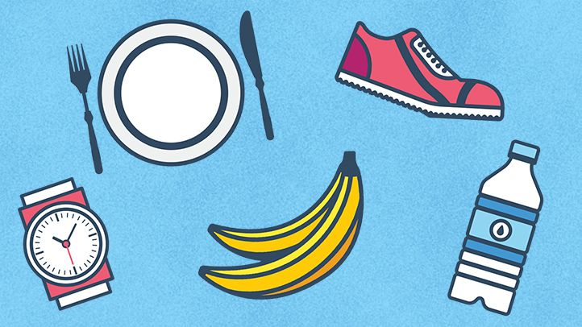

Health
&
Exercise

A healthy lifestyle isn’t just diet and exercise. Today we go over the components of leading a healthy lifestyle and how it’s important to lead a balanced life. In general, most would agree that a healthy person doesn’t smoke, is at a healthy weight, eats a balanced healthy diet, thinks positively, feels relaxed, exercises regularly, has good relationships, and benefits from a good life balance.
Maybe I should start by trying to look at a few definitions for the word – lifestyle. A definition in The American Heritage Dictionary of the English Language says: ‘A way of life or style of living that reflects the attitudes and values of a person or group’.
Definition Of A Healthy Lifestyle
The World Health Organization in 1946 defined health as ‘A complete state of mental, physical and social well-being not merely the absence of disease’.
Wikipedia defines a lifestyle as the way a person lives. This includes patterns of social relations, consumption, entertainment, and dress. A lifestyle typically also reflects an individual’s attitudes, values or worldview. A healthy lifestyle is generally characterized as a “balanced life” in which one makes “wise choices”.
A final definition of lifestyle is: The aggregation of decisions by individuals which affect their health, and over which they have control.
WHAT IS THE DEFINITION OF HEALTHY LIVING?
The World Health Organization (WHO), defines Health as a state of complete physical, mental, and social well-being, not simply just the absence of disease. The actual definition of Healthy Living is the steps, actions and strategies one puts in place to achieve optimum health. Healthy Living is about taking responsibility for your decisions and making smart health choices for today and for the future.